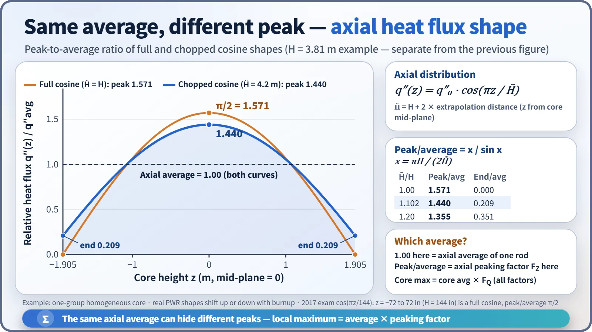
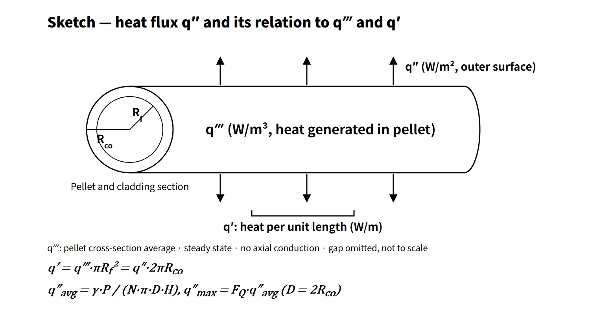

Thermal Hydraulics & Thermodynamics · C-TH-006
Heat Flux — Translating Core Thermal Power into the Language of One Square Metre of Cladding
The same heat divided by pellet volume, rod length or cladding surface — and the ladder from core power to average and peak heat flux.
Heat flux (q″) is the amount of heat passing through a unit heat-transfer area per unit time (W/m²). Reactor thermal design uses local values referred to the cladding outer surface; the core average is q″avg = γ·P / (N·π·D·H) and the local maximum is q″max = FQ·q″avg.
Heat flux comes as a set with the volumetric heat generation rate q‴ (W/m³) and the linear heat rate q′ (W/m). The three differ only in whether the same heat is divided by volume, length or area. This note concentrates on converting among the three and on calculating average and peak heat flux.
Principle and mechanism
Same heat, three yardsticks
Consider one segment of a fuel rod. With pellet radius Rf and cladding outer radius Rco:
- q′ = q‴·πRf² = q″·2πRco
- q‴ = Ef·Σf·φ (Ef recoverable energy per fission, Σf macroscopic fission cross-section, φ neutron flux)
Almost no heat is generated in the gap and the cladding. At steady state, neglecting axial conduction, q′ is therefore conserved in the radial direction and q″ is inversely proportional to radius. That is why the heat flux at the cladding inner surface is larger than at the outer surface. By convention, the "heat flux" in design tables refers to the outer surface.
Each of the three quantities is tied to a different limit:
- q″ sets the cladding surface temperature (q″ = h·(Tw − Tb)) and DNB. The local DNBR = q″CHF/q″, and its minimum is the MDNBR.
- q′ sets the fuel centerline temperature. With uniform heat generation and constant conductivity, the pellet center-to-surface temperature difference ΔT = q′/(4πk) does not depend on pellet size, so the fuel melting limit is managed in kW/m.
- q‴ is the link between reactor physics (neutron flux) and thermal hydraulics.
![Left: cutaway fuel rod above a conversion chain from volumetric heat rate q‴ of about 338 W/cm³ in the pellet, times πRf² to linear heat rate q′ averaging 17.8 kW/m, divided by 2πRco to heat flux q″ averaging 0.597 MW/m². Right: ladder for Catawba 2 from core power 3,411 MWt, times γ 0.974 to 3,322 MW generated in fuel, divided by a heat-transfer area of 5,562 m² for 50,952 rods to an average of 0.597 MW/m², times FQ 2.50 to a peak of 1.49 MW/m², with linear heat rate 17.8 to 44.6 kW/m and 1 MW/m² equal to 100 W/cm² or about 317,000 Btu/hr·ft²](../../assets/images/concepts/c-th-006-heat-flux/fig1-heat-flux-ladder.webp)
From core thermal power to average heat flux
The core-average heat flux is the heat that must leave through the fuel rod surfaces into the coolant, divided by the total heat-transfer area.
- q″avg = γ·P / (N·π·D·H), q′avg = γ·P / (N·H)
- γ is the fraction of heat generated in the fuel. Most of the fission energy (fragment kinetic energy and so on) becomes heat inside the pellet, but part of the prompt gamma and neutron slowing-down energy becomes heat directly in the coolant and structures. Westinghouse-type design tables put this as "heat generated in fuel 97.4 %" (γ = 0.974).
As an example, let us check the FSAR design table of Catawba Unit 2 (Westinghouse 4-loop) directly.
| Step | Value |
|---|---|
| Core thermal power P | 3,411 MWt |
| × γ 0.974 | 3,322 MW |
| Heat-transfer area N·π·D·H | 50,952 rods × π × 9.50 mm × 3.658 m ≈ 5,562 m² |
| Average heat flux | 0.597 MW/m² (table value 189,360 Btu/hr·ft²) |
| Average linear heat rate | 17.8 kW/m (table value 5.44 kW/ft) |
| Peak heat flux in normal operation | 1.49 MW/m² (table value 473,399, ratio 2.50 = FQ) |
Calculating APR1400 directly from 3,983 MWt, 56,876 rods, 9.5 mm outer diameter and 3.81 m active length gives an average heat flux of about 0.60 MW/m² and an average linear heat rate of about 17.9 kW/m. These are estimates, not values from the design documents.
Axial distribution: how average and peak relate
The axial neutron flux of a homogeneous cylindrical core is a cosine. With the origin at the core mid-plane, q″(z) = q″0·cos(πz/H̃), where H̃ is the height including the extrapolation distance.
- Full cosine (H̃ = H): zero at the ends, peak/average = π/2 = 1.571. For example, q″(z) = q″MAX·cos(πz/144) is this case when z runs from −72 to 72 in about the mid-plane (core height 12 ft = 144 in).
- Chopped cosine (H̃ > H): with x = πH/(2H̃), peak/average = x / sin x. For H = 3.81 m and H̃ = 4.2 m this is 1.44, and both ends are 0.21 of the average.
- The average on the graph is the axial average of one rod, (1/H)∫q″(z)dz. The peak-to-average ratio is the axial peaking factor FZ, which uses a different reference from the whole-core average. A total peaking factor (for example F = 2.80) is referred to the core average, so do not mix it with π/2.

In a real PWR the distribution shifts toward the top or bottom with burnup or flattens late in the cycle, so the axial peak is monitored through the axial flux difference (AFD) or ASI. The maximum heat flux of the whole core is obtained with FQ, which multiplies the axial peak by the radial peak and engineering factors.
What it means in a plant
- Design: for the same thermal power, more rods or smaller diameters increase the heat-transfer area and lower the average heat flux. The 17×17 assembly using thinner, more closely packed rods than the 14×14 to lower the linear heat rate follows the same logic. Conversely, once the number and length of rods are fixed, the margin for a power uprate is set by the peak heat flux and peak linear heat rate limits.
- Link to thermal margin: the PWR average heat flux is about 0.6 MW/m² and the local maximum about 1.3–1.5 MW/m². The minimum ratio of local CHF to local heat flux is the MDNBR (Catawba nominal 2.9).
- Operation: heat flux is not measured directly. FQ and linear heat rate are calculated from the in-core detector power distribution and the thermal power measurement and compared with the COLR limits. In CE-type plants (OPR1000, APR1400) COLSS monitors the linear heat rate margin, and the CPCs generate local power density (LPD) and DNBR trips.
Regulatory and design criteria
For example, in the United States:
| Basis | Key point |
|---|---|
| 10 CFR 50 Appendix A, GDC 10 | Specified acceptable fuel design limits (SAFDLs) not exceeded during normal operation and AOOs |
| NUREG-0800 SRP 4.4 | Thermal-hydraulic design review: DNB 95/95, prevention of fuel centerline melting, design tables of average and peak heat flux and linear heat rate |
| NUREG-1431 LCO 3.2.1–3.2.3 | Westinghouse type: FQ(Z), FΔHN, AFD |
| NUREG-1432 LCO 3.2.1, 3.2.4, 3.2.5 | CE type: linear heat rate (LHR), DNBR, ASI |
| Technical Specifications and COLR | Limit values set for each unit and cycle |
The definition and conversions of heat flux have not changed, but three aspects of practice have. First, the deterministic multiplication of engineering factors has moved to statistical thermal design. Second, limit values have moved from the Technical Specifications text to the COLR (GL 88-16). Third, SI units are now given alongside Btu/hr·ft² and kW/ft; for data in British units, 1 Btu/hr·ft² = 3.1546 W/m².
Easily confused pairs
| Heat flux q″ | Linear heat rate q′ | Volumetric heat rate q‴ | Critical heat flux q″CHF | |
|---|---|---|---|---|
| Unit | W/m² | W/m (kW/m) | W/m³ | W/m² |
| Reference | Cladding outer surface area | Rod length | Pellet volume | Surface area at the same location |
| Nature | Operating state variable | Operating state variable | Operating state variable | Limit set by cooling conditions |
| Main limit | DNB (MDNBR), surface temperature | Fuel centerline melting, LOCA PCT | Link to neutron flux | Numerator of DNBR |
| PWR average example | About 0.6 MW/m² | About 18 kW/m | About 340 W/cm³ in the pellet | Depends on local conditions |
Core power density (Catawba 104.5 kW/L) is referred to the whole core volume, so it is about three times smaller than the pellet-based q‴. State the reference volume.
Key points at a glance
- Definition: heat flux q″ = heat per unit time per unit heat-transfer area (W/m²), referred to the cladding outer surface.
- Conversions: q′ = q‴·πRf² = q″·2πRco; q‴ = Ef·Σf·φ.
- Average: q″avg = γ·P/(N·π·D·H), γ ≈ 0.974 (fraction generated in fuel).
- Peak: q″max = FQ·q″avg, FQ = nuclear × engineering.
- Axial: full cosine peak/average π/2; chopped cosine x/sin x (example 1.44).
- Example (Westinghouse 4-loop): average 0.597 MW/m², peak 1.49 MW/m², average linear heat rate 17.8 kW/m.
- Limits: q″ → DNB (MDNBR ≥ limit, 95/95); q′ → fuel centerline melting, LOCA PCT.
- Distinctions: heat flux (state variable) ≠ critical heat flux (limit); heat flux ≠ power density.
